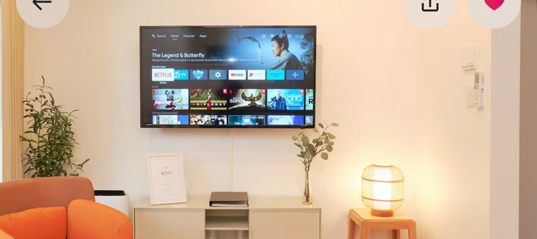
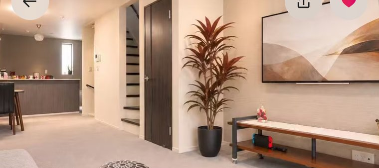
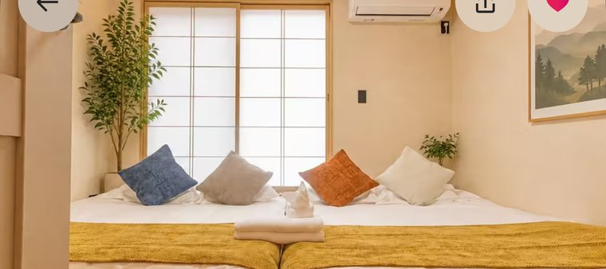
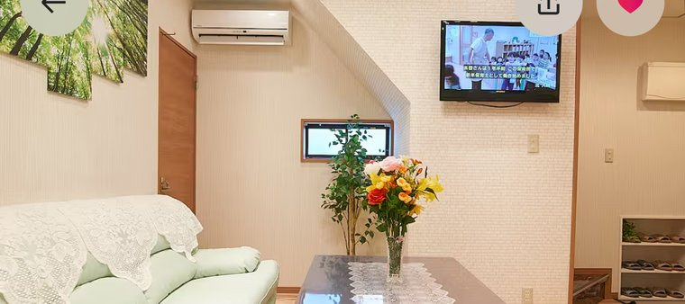
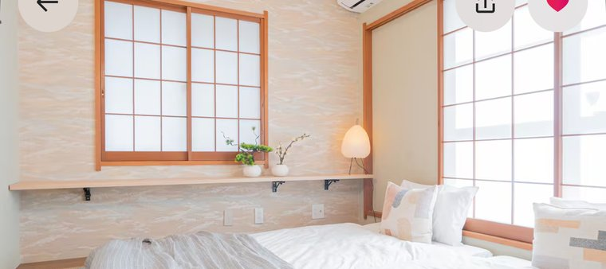
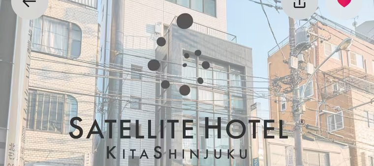
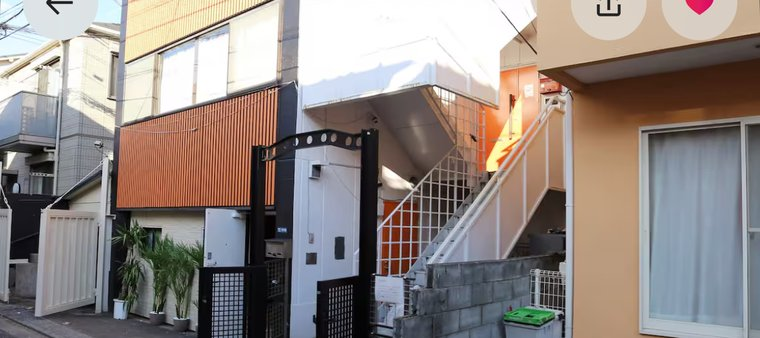
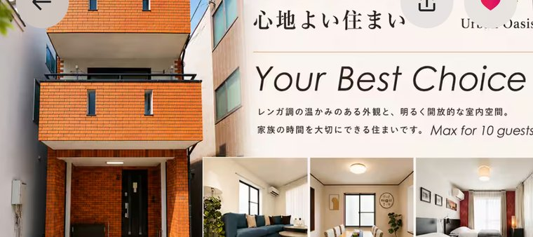
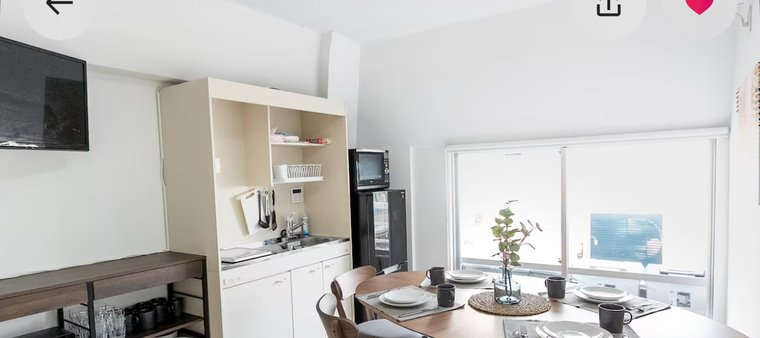

도쿄 숙소 아홉 곳 — 안전성 · 접근성 · 편의성
2027.01.14~17 · 3박 · 남자 6명 · 예산 제약 없음
기준점 오다큐 신주쿠역(1/15 하코네 로망스카 출발) · 가격은 순위에 반영 안 함

250만
여관업 허가 2023샤워 2개침실 418분
- ✓★4.99 · 후기 207 · 슈퍼호스트 7년 · “조용함” 37회
- !짐 보관이 현관 밖 잠금장치 · 준공 연도 미표기

206만
여관업 허가 2026샤워 2개침실 321분
- ✓★4.99 · 후기 203 · 상위 1% · 짐 보관 · 무료 주차
- !도어투도어 21분 — 아홉 곳 중 가장 멀다

147만
여관업 허가 2025샤워 1개침실 316분
- ✓하츠다이 셋 중 가장 가깝고 침대 6개가 전부 실제 침대
- !후보 중 유일하게 샤워 1개. 샤워는 1층, 침실 둘은 3층

200만
M13 민박 신고샤워 2개침실 6 · 1인 1실12분
- ✓침실 6개 = 여섯 명 전원 1인 1실. 아홉 곳 중 유일
- !오쿠보 저지대 목조밀집 · 민박 신고라 허가 등급이 낮다

200만
여관업 허가 2024샤워 2개침실 312분
- ✓샤워 2 · 화장실 2 · 세면대 3. 아침 준비가 가장 빠르다
- !침대 7개 중 2개가 라운지 소파베드 · 토요일 밤 소음

237만
허가 없음샤워 2개침실 614분
- ✓301호+401호 묶음이라 호실마다 샤워가 하나씩 있다
- !“오래된 건물에 리모델링” · 층 분리 · 엘리베이터 없음

168만
허가 없음샤워 2개침실 ?12분
- ✓샤워 2 + 화장실 2 · 신오쿠보 도보 3분 · 슈퍼호스트 9년
- !좁은 골목 · 외부 철제 계단 · 침실 수와 6인 가격 미확인

133만
탈락8번
시부야구 혼마치 서쪽
허가 없음샤워 1개침실 3동선 ?
- !요약은 “욕실 2개”인데 실제 샤워는 1개
- !평점 4.0 · 후기 3개 · 정원 8명/10명 표기 불일치

185만
탈락2번
신오쿠보 · 카부키초 인접
허가 없음샤워 2개침실 314분
- !카부키초 인접 — 지진 대피 조건으로 가장 나쁜 유형
- !야간 치안 아홉 곳 중 최하 · 평점 4.42
결론
시부야구 고지대 셋(4·7·9번)은 지반·허가가 같고 준공 연도도 셋 다 미표기 — 안전성 동점. 갈린 건 샤워 2개 대 1개.
확정 전 ① 4·7·9번 준공 연도 ② 1·2·3·8번 허가번호 ③ 4번 짐 보관 위치
·